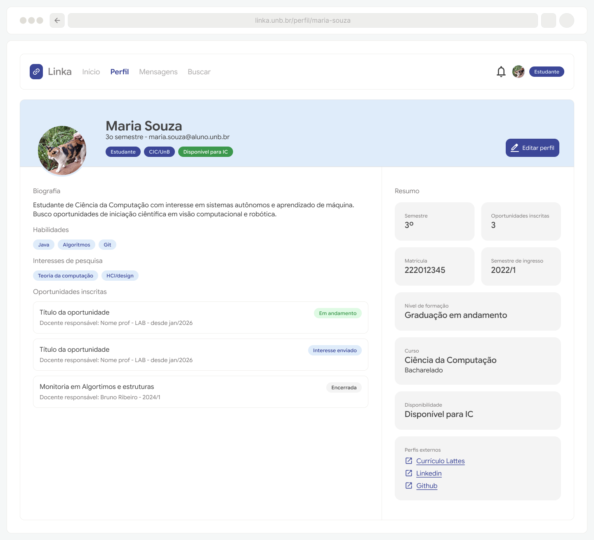
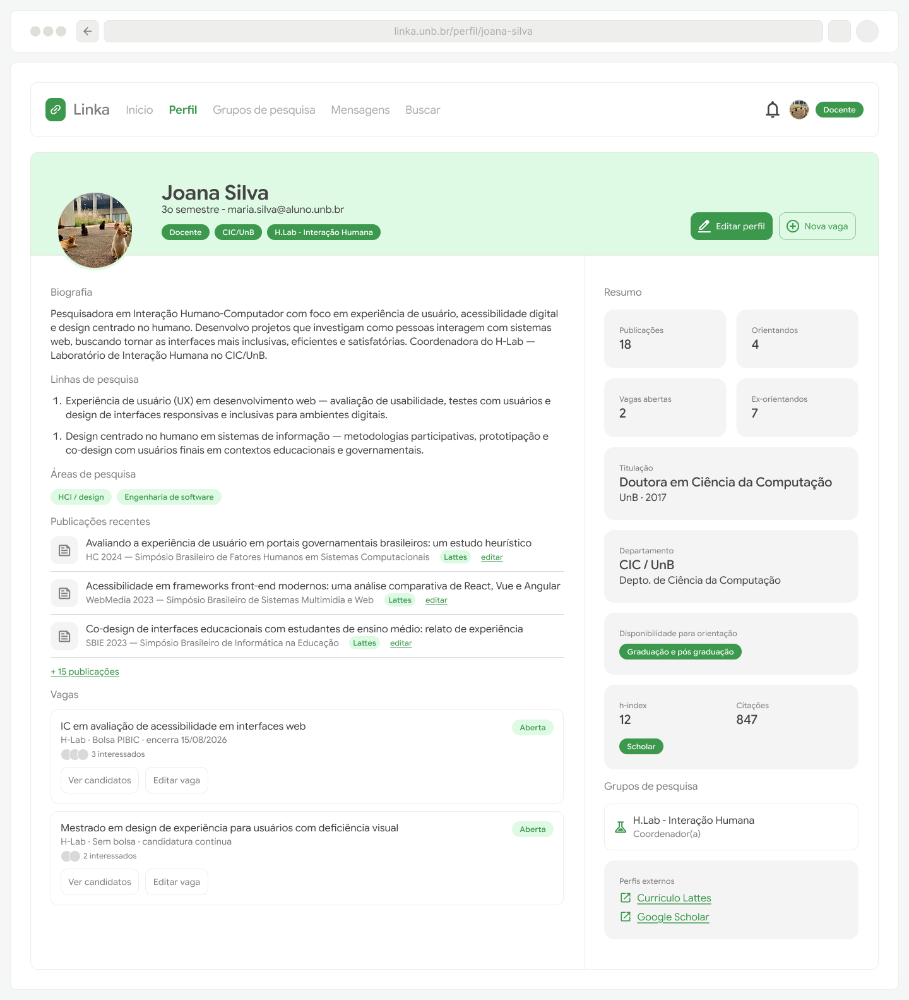
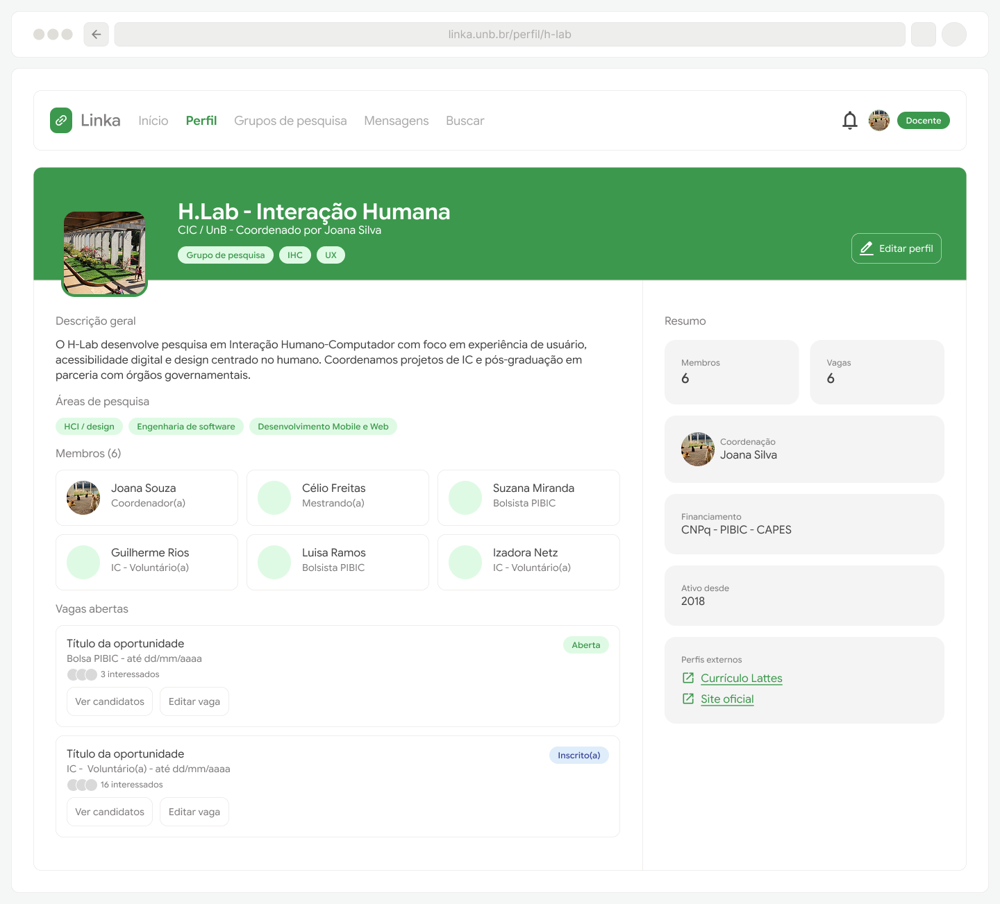

Protótipos para o Épico 1: Perfis
Considerando que o Épico 1 contempla os requisitos funcionais RF01 a RF05 e RNF1 e RNF3, os protótipos criados focaram na estruturação das páginas de perfil com suas respectivas opções de edição e visualização. Também há opcionais de interações a partir do perfil que variam conforme o papel que os visualiza (por exemplo: um aluno ao visualizar o perfil de um professor terá opções de contato ou demonstrar interesse em uma vaga, enquanto que o professor que visualiza seu próprio perfil visualiza ações de edição)
A versão principal do protótipo, para fins de visualização, foi construída para web/desktop, porém a proposta é de um layout responsivo e adaptável a dispositivos móveis.
Perfil estudante: protótipo navegável

Perfil docente: protótipo navegável

Perfil grupo de pesquisa: protótipo navegável
